PyTorch demystified 2a - Building the autograd engine
Published: Aug. 2026
"No one rises and greets the morning sun with,
“I can’t wait to figure out the correct place to call free() for every byte of memory I allocate today!”"
— Robert Nystrom
In the previous post of this series (found here) we built a Tensor class, gave
it basic operations such as multiplications with other tensors and scalars, addition, subtraction, and a basic matrix multiplication.
In this second post we want to build everything that it now needs to define and train real neural networks.
While writing I found that this second entry turned out be really large with a huge storyline, so I split it into two parts.
This one, part 2a, focuses on the autograd engine
itself: the computational graph, how it gets built dynamically as tensors interact, and how we propagate gradients backward
through it. Part 2b then picks up from there and adds the deep learning
modules — activation functions, layers, loss functions, optimizers — and wires everything into a Python frontend and a
full MNIST training pipeline.
To this end, we will implement an engine that builds a computational graph for us on the fly, allowing us to propagate gradients through the
graph (keyword: the infamous backprop-algorithm). We will then give it further components of a basic neural network, such as activation functions,
and then give it everything we need for training: optimizers, loss functions, a Python frontend enabling us to define networks, and a training loop.
A rough goal is outlined in the figure to the right or below this text.
Implementing autograd
Outlining the engine
For training we have multiple ways to do it. Tensorflow.Keras would be one option, where we implement a network, then give it
training parameters and have it train in its own environment. However, the approach PyTorch is taking is much more flexible (and
also nicer to debug while building), and it will help us define more complicated networks as we go along into deeper ML territory.
Thus I personally picked the PyTorch approach. Essentially, what we want to have is something along the lines of
A, B = some_tensors()
C = some_op(A, B)
C.backward()
assert(C.has_grads() and C.has_grads())
We can extend this arbitrarily long, having a chain of operations, and in the end we have to propagate the operations backward
to the tensors. If that now looks cryptic to you I won't blame you, so let's make sure we are on the same page of what this actually
means. I will use this chance to dive right into the matmul operation here, since that one will come to haunt us later and is one of the
harder cases to wrap our heads around. Say we have two tensors $A \in \mathcal{R}^2$ and $B \in \mathcal{R}^2$. Then the matrix
multiplication of the two will be
$$C = A @ B = \left [ \begin{matrix}
a_{11}b_{11} + a_{12}b_{21} & a_{11}b_{12} + a_{12}b_{22} \\
a_{21}b_{11} + a_{22}b_{21} & a_{21}b_{12} + a_{22}b_{22}
\end{matrix} \right ]$$
So what does it mean to call C.backward() now? Looking at the backpropagation algorithm now, or more precisely, taking
an example of an optimizer, SGD for simplicity, we find ourselves reminded of the update rule classically written as
$\theta \leftarrow \theta - \nabla_{\theta} J^{i+1}$, where I simplified a little. Here, $J^{i+1}$ is simply the
incoming gradient from the previous layer, derived w.r.t. $\theta$. Taking weight $a_{11}$ for example, it contributes to
$C$ in two entries, namely in its first row. Here we need to apply the multivariate chain rule for partial derivatives defined
as
$$\frac{\partial L}{\partial x}=\sum_i \frac{\partial L}{\partial z_i} \cdot \frac{\partial z_i}{\partial x}$$
Say for instance we have a graph coming from the following operations: $C = A \cdot B$, $D = A + B$, and $E = C \cdot D$. Then the chain
rule for $\frac{\partial E}{\partial A}$ becomes
$$\frac{\partial E}{\partial A} = \frac{\partial E}{\partial C} \cdot \frac{\partial C}{\partial A} + \frac{\partial E}{\partial D} \cdot \frac{\partial D}{\partial A}$$
The graph including the backward computation are illustrated below for better clarity.
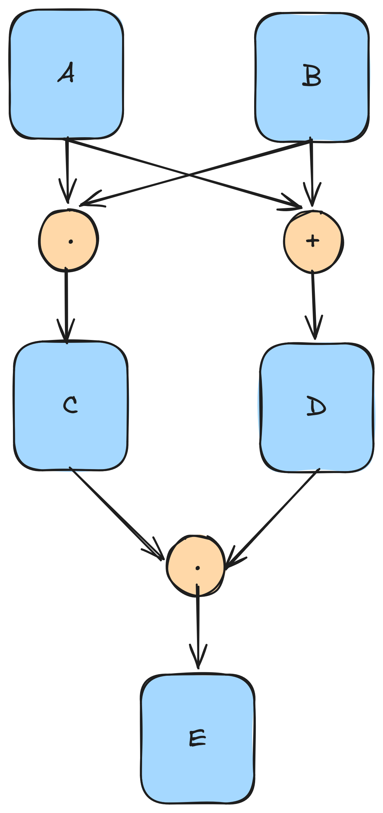
Graph showing an example of a forward computational graph.
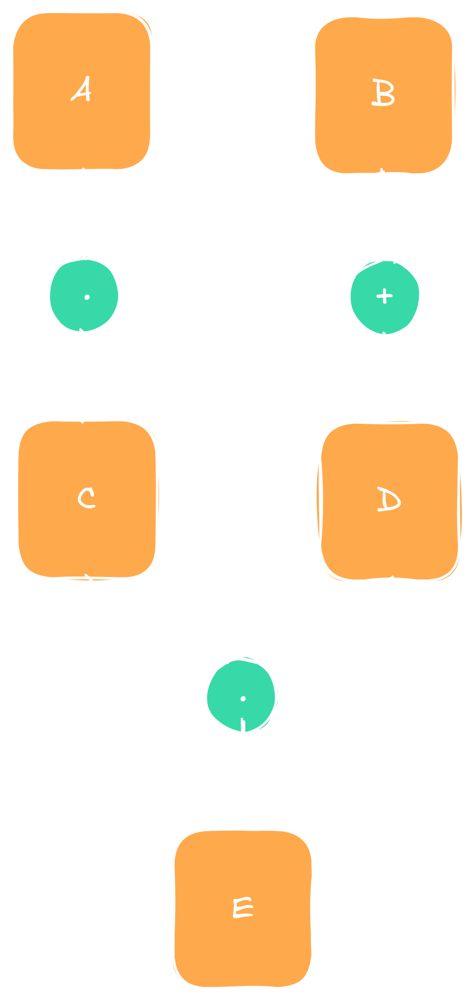
Graph showing an example of a forward computational graph.
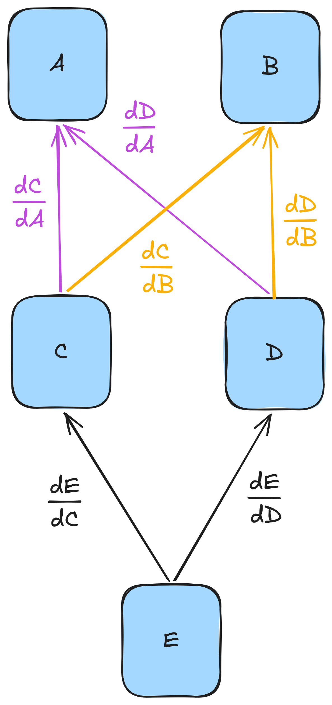
When computing backward the derivative of $E$ wrt to $A$ and $B$ has to be the sum of their individual contributions.
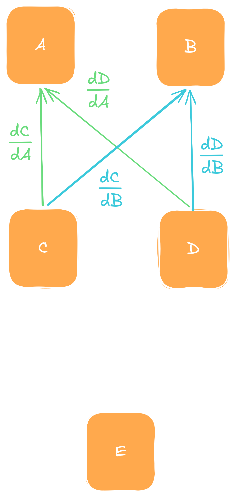
When computing backward the derivative of $E$ wrt to $A$ and $B$ has to be the sum of their individual contributions.
This whole setup now makes intuitive sense in that components that contribute forward must also take the same path backwards. And the fact
that it turns out to be a sum, well, we leave that up to the smart mathematicians to prove that this always holds (or if you have an intuition
or a candid proof you are so kind to give it to me). Going now full circle back to our example, we have now the gradient
$$\frac{\partial C}{\partial A} = \left [ \begin{matrix}
\frac{\partial C}{\partial a_{11}} & \frac{\partial C}{\partial a_{12}} \\
\frac{\partial C}{\partial a_{21}} & \frac{\partial C}{\partial a_{22}}
\end{matrix} \right ]$$
In this matrix,
$$\frac{\partial C}{\partial a_{11}} = \sum_{i, j} \frac{\partial c_{ij}}{\partial a_{11}}
= b_{11} + b_{12}$$
And the other entries follow naturally.
Now this was probably a bit of a leap for anyone who has never implemented this, and if it was I encourage you to think about it a little before
proceeding if you want a deeper dive into ML. We will implement this in the next steps for a wide range of operations apart from matmul, and perhaps
that'll clear some of the remaining fog. For now it is important to have an idea of what we are aiming to achieve, and if the rough idea landed, then
the following dive into code will hit right home. We start by revisiting one of our previous matrix operators we implemented. For simplicity, I use the
addition here:
Here, we are creating a new tensor object, filling it with meaningful content, and returning it. That is, in our framework $C$ is a result of $A$ and $B$,
and returned by the operation creating it. We can use this architecture to build our graph silently in the background. We will do this in a few sequential
steps.
Make the gradient computation optional: Because we might not necessarily want every Tensor that participates in the graph to actually have a gradient, we give it a flag indicating whether we want to
compute its gradients via bool requiresGrad = false;, accessible via constructor or setter methods. That saves us computation and memory, as
it prevents us from computing and storing gradient information we do not need.
Give Tensor class a gradient field: Each tensor gets an optional, lazily initialized Tensor via std::shared_ptr<Tensor> grads = nullptr;.
The reason we are using a shared pointer is to allow for shallow copies. As we will later see it can be beneficial to allow for copies of Tensors without
having to copy all the underlying fields in the backend, but selectively manipulate fields we want to. This will enable us to create views. So all fields that
we want to remain shared for all views need to be managed via a shared reference.
Make the Tensor class a graph node: As seen in the example, both tensors creating new tensors of the graph, as well as tensors created from them, function
as nodes of the final graph. We therefore need to build that connection. We observe that so long we allow new edges to only emerge as the result of an operation
creating a new node, it is impossible to introduce cycles into the graph (proof by contradiction). In other words, we do end up with an acyclic graph. And importantly,
a directed acyclic graph (DAG), since the only time the graph really matters is in the backward pass. And here parent nodes point only to child nodes to pass their
gradient into them. Thus, graph creation consists of two steps:
Parent node is created as the result of an operation.
Parent node gets references to its child nodes, and the edge represents the computation performed during the backward pass.
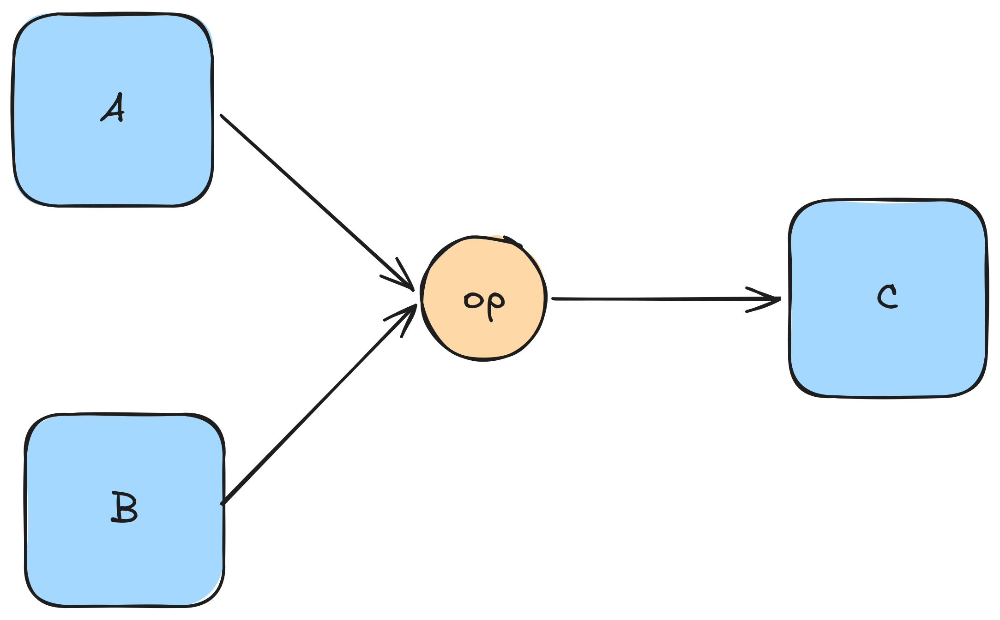
The forward pass consists of one or more tensors performing an operation, creating the result. Arrows indicate passes,
not a graph.
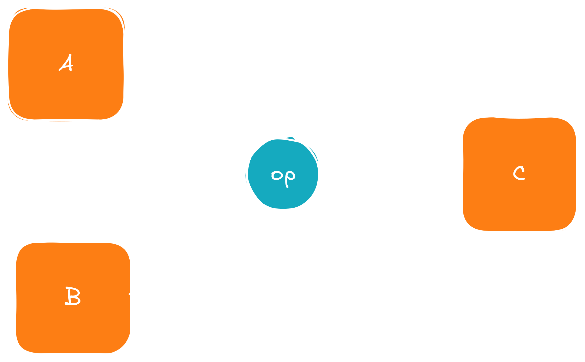
The forward pass consists of one or more tensors performing an operation, creating the result. Arrows indicate passes,
not a graph.
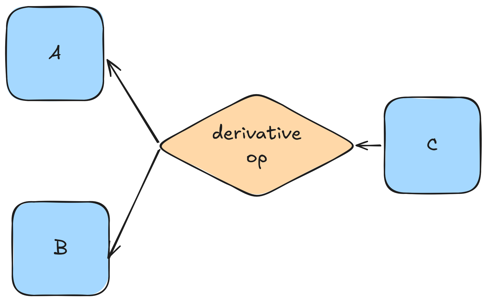
During the backward pass the graph gets built, the edge encodes the derivative operation.
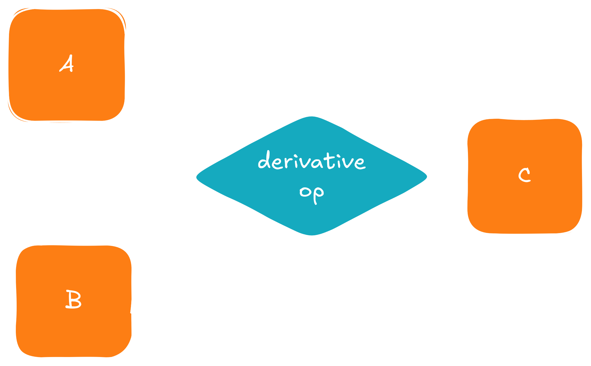
During the backward pass the graph gets built, the edge encodes the derivative operation.
And this is the rough idea that we will implement in the next section.
Implementing dynamic graph creation
Now that we know what we want to do, we can dive right in. Because we want to separate the graph from the Tensor class,
we give it a new class via
We allow for moves but suppress copies, since copies will foreseeably do arcane things to our graph we'd rather not deal with.
The class takes in a vector of pointers to its parents to allow for an arbitrary number of those. We also expose the parents
via a const reference, and give it a backward function taking a reference to the incoming tensor. This is simply due to the chain rule
$\frac{\partial}{\partial x} f(g(x)) = f'(g(x)) \cdot g'(x)$. Thus the const Tensor& upstreamGrad argument represents
the incoming $g'(x)$.
To make the Tensor class now a part of the computational graph we now have to give it an attribute
std::shared_ptr<cgraph::GraphNode> cgNode = nullptr;, and we expose it via
One detail I just skimmed over so far is why the GraphNode class stores its parents via a shared pointer in
std::vector< std::shared_ptr<Tensor> > parents;. To do so we have to think about what happens
when we actually start training neural networks. Here we will do something along the lines of
x = next_batch()
y_pred = my_network.forward(x)
loss = loss_fn(y_pred)
optim.step(loss)
But what happens here internally? We have a network my_network holding references to internal tensors and
other modules like activation functions. Internally, on calling forward it will do something like
def forward(self, x):
for layer in self._layers:
# x now is a newly created tensor holding a reference to its parent
x = layer.forward(x)
return x
But what happens with x when the loop goes into the next iteration? If we don't watch our steps it will be destroyed,
and the second time the loop enters x will be invalid, breaking whatever happens in layer.forward(x). We thus
need the parent to hold ownership of its child nodes. The last x returned by the loop will hold a reference to its preceding
x, which in turn will hold a reference to its preceding node, and so on. And once the returned x goes out of
scope the whole invisible chain we built in the background disappears. The figure in the following illustrates this schematically.
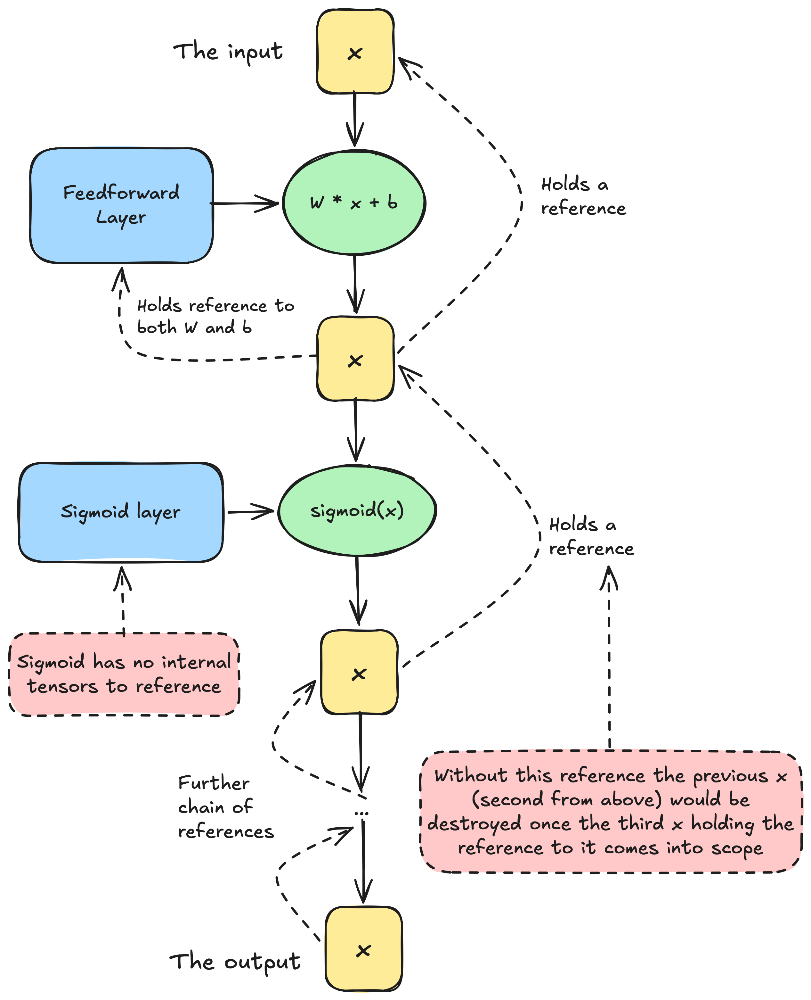
Example of the loop illustrated above, and how we solve the ownership problem. As long as the final output
tensor remains alive so does the whole chain of tensor.
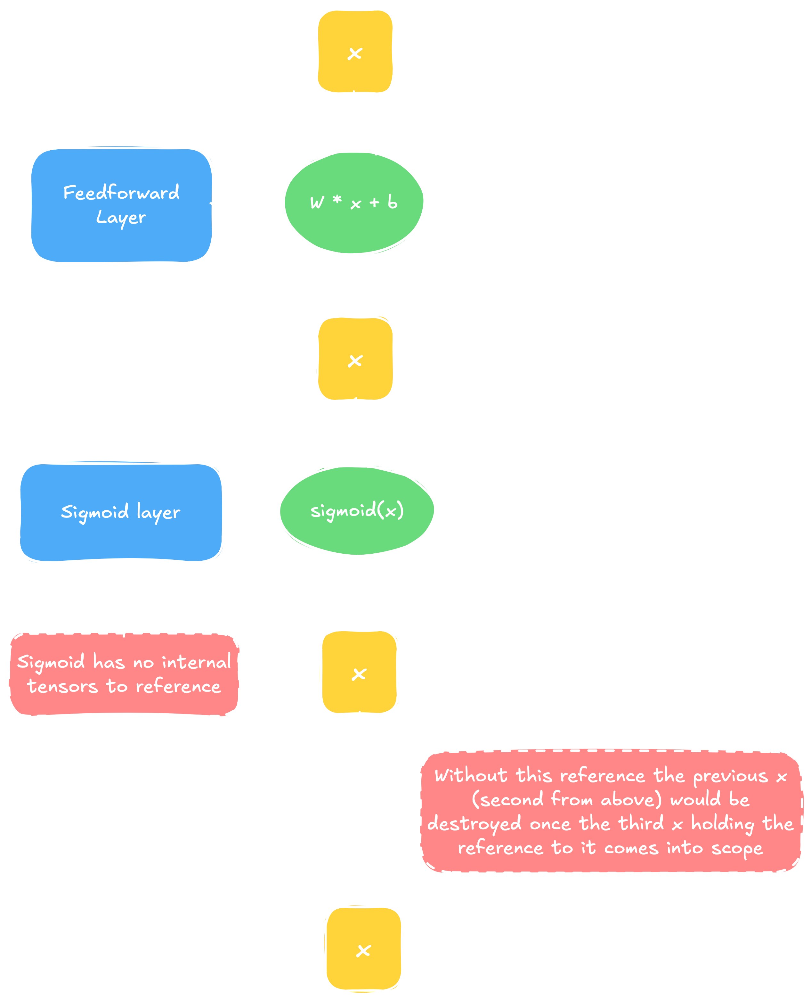
Example of the loop illustrated above, and how we solve the ownership problem. As long as the final output
tensor remains alive so does the whole chain of tensor.
We are now faced with two choices. We can either rewrite every operation we created so far, returning a shared
pointer, or we can use wrappers. I decided for the wrappers for two reasons: First of all, it keeps the API
clean. Calling matmul internally in the backend has no side effects such as creating a shared pointer and silently
building a computational in the background. Our implemented methods stay slick and lean and to the point. The second
reason is that we do need the shared pointers really only for the backward pass. Later, when we finished training a
network and we just want it to spill whatever it was trained to do, we do not need the graph anymore. Shared pointers here
introduce slight memory overhead, but more importantly, incur a performance penalty through an additional layer of indirection.
Separating graph creation from the Tensor class itself will later enable us to optimize the hell out of the forward pass if we
wish to do so. Without further ado, let us start with a simple addition as implemented in the following:
// src/backend/data_modeling/tensor.cpp
Tensor Tensor::operator*(ftype scalar) const {
Tensor res(dims, values->getDevice(), false);
for (tensorSize_t i = 0; i < values->getSize(); ++i) {
(*res.values)[i] = (*values)[i] * scalar;
}
return res;
}
We write a wrapper around this operation in the following fashion:
Here, we do the overload to once again mirror what Python does with its __rmul__. The function itself checks if the input t
wants to know its gradients later on, and if yes gives the result of the operation a ScalarMulNode object, holding a
reference (and therefore ownership) to itself. Since t is an input argument it already is a shared tensor, and this just
gives the new ScalarMulNode a copy of this pointer, and reference counting does the rest for us automatically.
However, I still owe you the ScalarMulNode implementation. Interesting here is mainly that it derives from GraphNode to
work, and you see the first implementation of a gradient in the backward() method:
// src/backend/computational_graph/tensor_ops/scalar_op_nodes.h
namespace cgraph {
class ScalarMulNode final : public GraphNode {
private:
const ftype factor;
public:
explicit ScalarMulNode(std::shared_ptr<Tensor> t, ftype factor)
: GraphNode({std::move(t)}), factor{factor} {}
std::vector<std::shared_ptr<Tensor>> backward(const Tensor& upstreamGrad) override;
};
}
// src/backend/computational_graph/tensor_ops/scalar_op_nodes.cpp
using namespace std;
using namespace cgraph;
vector<shared_ptr<Tensor>> cgraph::ScalarMulNode::backward(const Tensor& upstreamGrad) {
assert(!upstreamGrad.getRequiresGrad());
auto res = make_shared<Tensor>(upstreamGrad.createDeepCopy());
for(tensorSize_t i=0; i<res->getSize(); i++){
res->set(res->get(i) * factor, i);
}
return {std::move(res)};
}
Note that we gave the node the scalar as a constant it stores internally as const ftype factor;.
The backward function simply computes the gradient. For a function $f(g(x))$ here $g(x)$ is simply $c \cdot x$, with
$c$ being a constant. Then $\frac{\partial}{\partial x} c\cdot x = c$ and thus
$$\frac{\partial}{\partial x} f(g(x)) = f'(g(x)) \cdot g'(x)= f'(g(x)) \cdot c$$
Here, $f'(g(x))$ is the incoming gradient named upstreamGrad.
In the same fashion we can now build wrappers for the remainders of the operations we already have. I will simply drop you
the declarations, the definitions follow the exact same pattern that we just observed. Here they come.
You can look up their implementations in the accompanying implementation file. Feel free to skip to the next
optional section if you got everything you want out of this one, but if you are willing to bear with me I
invite you to take a brief look into two more node types which I personally found interesting and
not as straight forward as the rest.
Optional: Two more graph node implementations
In this brief subsection we take a look at two more nodes which I found interesting. I won't go into
the whole wrapper-around-the-base-operation pattern, since we naturally will revisit this in the following sections
a few times more. Instead I want to focus on the real meat-and-potatoes of the matrix multiplication node, more precisely
the backward function implemented as the following:
This one is interesting for its simplicity. Basically, given two matrices $A$ and $B$, and computing their
matrix multiplication $C = A @ B$, we obtain the following for the derivatives:
$\frac{\partial C}{\partial A} = C @ B^T$ and $\frac{\partial C}{\partial B} = A @ C^T$. Here, $B^T$ and
$C^T$ are the transposed matrices respectively. This result can be verified by hand. For us right now this is
interesting just from a practical point of view, since it saves us what might probably be a few hours of handwriting
and debugging a nested array indexing mess. But also, it later will open a door for optimization.
Interesting is also what happens if we just get a single element from a tensor. Say we wanted to sum over a tensor,
something similar to loss_sum = loss.sum(), and then propagating the summed tensor back through the network.
We do this via the chunk of code below.
// src/backend/computational_graph/tensor_ops/graph_creation.cpp
using namespace std;
shared_ptr<Tensor> cgraph::sumTensor(const shared_ptr<Tensor> t) {
auto res = make_shared<Tensor>(std::vector<tensorDim_t>{1}, std::vector<ftype>{0.0},
t->getDevice(), t->getRequiresGrad());
for(tensorSize_t i = 0; i < t->getSize(); i++){
res = cgraph::add(res, cgraph::get(t, i)); // cgraph::get() shown below
}
return res;
}
// there is a second overload of get() which I don't show here, since it can be inferred easily from this
shared_ptr<Tensor> cgraph::get(const shared_ptr<Tensor>& t, tensorSize_t idx) {
ftype val = t->get(idx);
auto res = make_shared<Tensor>(std::vector<tensorDim_t>{1}, std::vector<ftype>{val},
t->getDevice());
if(t->getRequiresGrad()){
res->setCgNode(std::make_shared<cgraph::GetterNode>(t, idx));
assert(res->getRequiresGrad());
}
return res;
}
The sum operation will leave a trail of nodes in the same vein as we've seen earlier,
one node for every sum we perform. When propagating backwards we have to take care of
the dimensions, as they need to match those of the parent:
// src/backend/computational_graph/tensor_ops/getter_node.cpp
using namespace std;
using namespace cgraph;
vector< shared_ptr<Tensor> > GetterNode::backward(const Tensor& upstreamGrad) {
// upstreamGrad is scalar by definition
assert(!upstreamGrad.getRequiresGrad() && upstreamGrad.getDims().nDims() == 1);
auto res = make_shared<Tensor>(parents[0]->getDims(), parents[0]->getDevice(), false);
TensorFunctions::ToZeros(*res);
if(std::holds_alternative<tensorSize_t>(idx)){ // idx is of type std::variant
res->set(upstreamGrad.get(0), std::get<tensorSize_t>(idx));
}
else if(std::holds_alternative<multiDimIdx_t>(idx)){
res->set(upstreamGrad.get(0), std::get<multiDimIdx_t>(idx));
}
#ifndef NDEBUG
else{
__throw_runtime_error("Idx variant in unexpected state");
}
#endif
return { std::move(res) };
}
Implementing backpropagation
Having established a computational graph and its memory management it'd be a waste to not put it to use now.
Remember, our goal was to propagate gradients through the graph in a fashion of some_tensor.backward().
Here, we will do exactly this. We start by implementing a backward function:
// src/backend/data_modeling/tensor.cpp
void Tensor::backward() {
if(!requiresGrad || !cgNode){
__throw_runtime_error("Invalid invoking of backward()"); // admittedly could be a better message
}
/**
* If this tensor has no built up gradient (invoking tensor without loss-function)
* we initialize one with ones.
*/
if (!grads) {
grads = make_unique<Tensor>(dims, values->getDevice(), false);
for(tensorSize_t i=0; i<values->getSize(); i++){
(*grads->values)[i] = 1;
}
}
for(/* some method to iterate backwards over graph */){
auto incomingGrads = tensor.cgNode->backward(*tensor.grads);
const auto& parents = tensor.cgNode->getParents();
for(size_t i = 0; i < parents.size(); i++){
auto parent = parents[i];
if(!parent->requiresGrad){
continue;
}
else if(!parent->grads){
parent->grads = incomingGrads[i];
}
else{
// reminder: multivariate chain rule
*parent->grads->values += *incomingGrads[i]->values;
}
}
}
}
The code is pretty straight forward. If the tensor we call backward() on has
no gradient yet, then its gradients will be ones-initialized. This is because, due to
the chain rule, the parent nodes' gradients will be multiplied with this gradient, and
any factor other than one will obviously lead to a wrong result. After that we traverse the
graph backwards, call each node's backward function and update the gradient of the respective
tensors.
What is an open question is how to traverse the graph? The first algorithms that come to
mind might be depth-first-search (DFS) and breadth-first-search (BFS). However, they can run into a
structural problem on simple graphs already. I outline the problem in the graph depicted in the
coming figure.
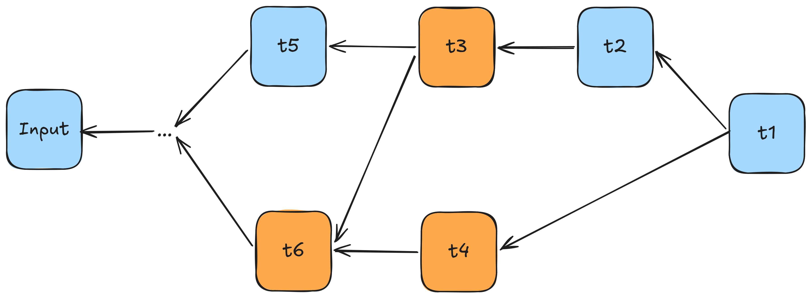
An example backward pass through the computational graph. The interesting part is in what order
to process the highlighted nodes.
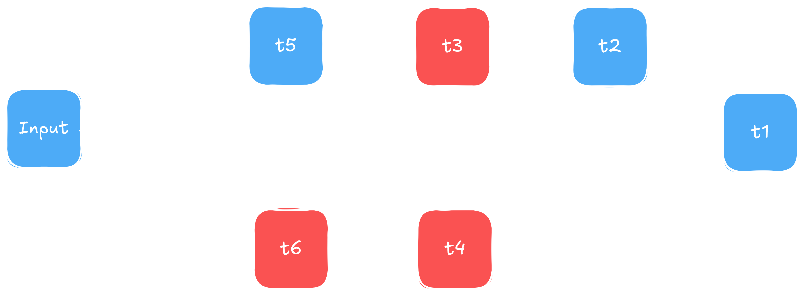
An example backward pass through the computational graph. The interesting part is in what order
to process the highlighted nodes.
The question is in what order to process those nodes. Taking a closer look at the three highlighted ones
we can see the conundrum both DFS and BFS give us. We already know that the incoming gradient into t6
will have to be the sum of the two gradients coming from t3 and t4. We therefore have to first
add the gradients of both t3 and t4 into t6, before we pass the gradient of t6 backward. The ideal ordering here
is either t3->t4->t6, or alternatively t4->t3->t6.
Generalizing what we just established we can phrase it in the following: "Before passing a node's gradient to its
parent nodes we first have to accumulate the gradients of its child nodes". Digging up forgotten memories of past
traumas incurred by our data structures and algorithms courses (for most of us at least, I for my part enjoyed
those), we might be reminded of topological sort. Essentially, a topological sorting of a DAG is a sorting in which child nodes
come before parent nodes. The moment we visit a child node we are guaranteed to have visited all of its parent nodes.
We can implement topological sort using either DFS or Kahn's algorithm, and I will leave it up to you to figure it out,
or you just take a look at my implementation (spoiler alert: I went for Kahn's). I will just show you where to use it,
filling the gap of our previous backward implementation:
// src/backend/data_modeling/tensor.cpp
void Tensor::backward() {
// ...
// topo-sort starting with this node
vector<Tensor*> sortedTensors = cgraph::TopologicalSort::reverseSort(this);
for(auto tPtr: sortedTensors){
auto& tensor = *tPtr;
auto incomingGrads = tensor.cgNode->backward(*tensor.grads);
// add the grads as previously seen...
}
}
With this we're good to go. If we expose this via our Python frontend now we can readily do our
first gradients, as tested in the unit tests of the project. I provide one here to show what
is theoretically possible for now, before we move on to turning this into a full training pipeline
in the next part.
t1 = Tensor([1], [3.0], True)
t2 = Tensor([1], [2.0], True)
t3 = t1 + t2
loss = t3 * t3
loss.backward()
assert t1.grads.getitem(0) == pytest.approx(10.0)
assert t2.grads.getitem(0) == pytest.approx(10.0)
Summary
That's it for part 2a of this second entry of my blogposts. We implemented the autograd engine,
consisting of building a computational graph that builds itself as tensors interact, and a
method to propagate gradients through the graph via topological sort. Part 2b heavily banks on what we established here and adds everything needed for a full
deep learning training loop: activation and loss functions, feedforward-layers, and optimizers. It then
puts everything into the Python frontend and ties it together with a full MNIST-example.
The source code for this part lives
here. Feedback is
always welcome, so feel free to reach out via LinkedIn or E-mail. Mind that part 2 is not the final
part of the series though, so don't forget to first check the up-to-date main branch. Cheers.